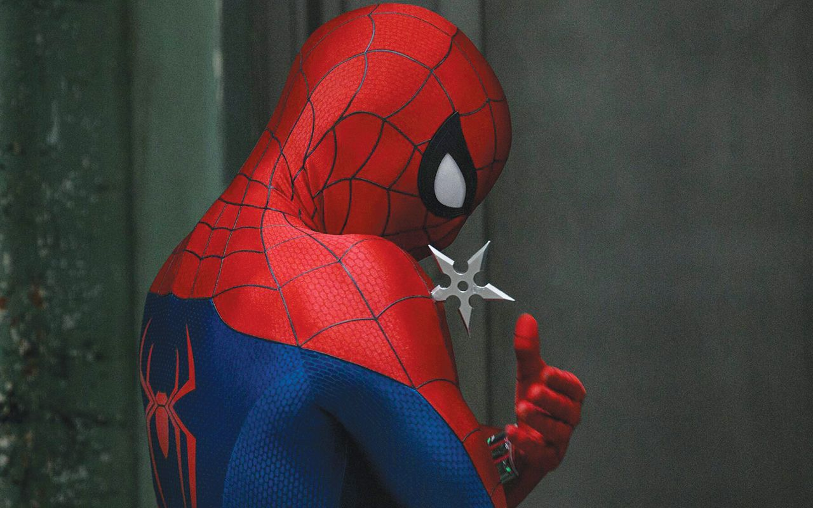
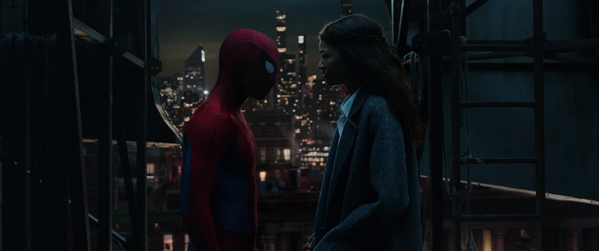
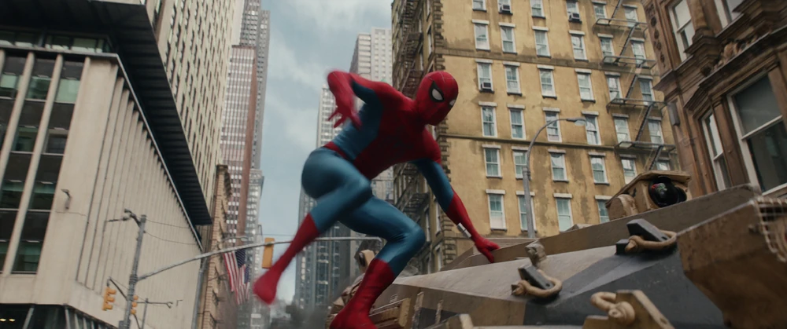

Note : 4/5
Un Spider-Man plus mature que jamais, porté par un casting élargi et un vrai regard sur ce que ça coûte d'être Peter Parker. Quelques longueurs et une fin un peu trop maline n'empêchent pas ce Brand New Day d'être l'un des meilleurs films Spider-Man du MCU.
⚠️ Attention : cette critique dévoile des éléments importants sur l'intrigue de Spider-Man: Brand New Day, y compris la fin et la scène post-crédit.
LE FILM DU PEUPLE !
Ce film est le début d'une nouvelle grande aventure pour Tom Holland et le MCU. C'est beaucoup plus mature, avec des thèmes bien abordés et qui ont un impact réel sur Peter et son entourage (New-Yorkais, vie personnelle, ennemis, alliés, etc.).
Il reprend après les événements de No Way Home, et jongle parfaitement entre les événements du passé et les événements actuels, donc l'évolution de Peter en tant que Spider-Man, voir les gens qu'il aime avancer sans lui alors que lui ne peut rien faire, à part avoir mal au fond de lui et se contenter d'être Spider-Man.
Le générique Marvel se transforme en souvenir de Peter, avec des illustrations magnifiques de lui en fond et son thème principal. Je pense pouvoir dire que ça fait partie du top 3 des génériques Marvel, et il n'est pas 3ème.
C'est un film qui se focalise ÉNORMÉMENT sur Peter Parker, sur ce que ça fait d'être lui, de jongler entre Spider-Man et Peter. La souffrance de n'avoir personne en tant que Peter mais d'être adoré de tout le monde en tant que Spider-Man.

Un costume qui claque à l'écran
Il faut le dire : le costume rend vraiment bien à l'écran. Les couleurs sont magnifiques sur Spider-Man, il y a un vrai travail sur le rendu à l'image, ça change des tenues qu'on a pu voir jusque-là et ça donne un vrai charme visuel au personnage, en plus de coller avec toute l'évolution organique de Peter durant le film.
Les personnages secondaires
Les personnages sur le côté ne sont pas inutiles, ce ne sont pas des vieux caméos débiles. Ça compte dans l'histoire et ça fait plaisir de voir tellement de gens connectés dans le MCU dans un film Spider-Man.
Punisher est tellement bon, pas trop mis de côté, assez important pour être un soutien à Peter Parker. La dose d'humour est bien gérée et bien dosée. Peut-être que ça fera bizarre pour certains de voir Punisher être un peu drôle, mais je trouve que ça fait sens avec le film. Ce ne sont pas des blagues pour dire d'être drôle. Rien que le duo MJ/Punisher était vraiment drôle à l'écran, ils se ressemblent sur plein d'aspects. Même le duo Punisher/Peter est tellement drôle et parfait. C'est littéralement Daredevil et Punisher, mais avec un grain d'humour en plus.
Yelena est sympa à voir, elle apporte son charme, et je trouve qu'elle s'intègre parfaitement bien dans un film Spider-Man. Petit moment savoureux et complètement inattendu : la scène où on va lui demander des informations dans son QG se termine... dans un bain. Une simple demande d'infos qui finit en bain avec Yelena, c'est drôle, décalé, et ça montre bien le ton plus détendu que le film sait aussi adopter par moments.
La policière est un peu mise de côté durant le film, ça la dépasse clairement les événements et le film ne tente même plus de rattraper ça. Elle a une bonne relation avec Spider-Man et tout ce qu'elle dit c'est juste "Là tu fais trop de mal, repose-toi", et ensuite on ne la revoit plus avant 40 minutes.
Hulk/Banner : c'est beau visuellement, c'est fort en chorégraphie. On ressent les coups, et voir un Hulk aussi enragé, c'est réussi. Le seul problème, c'est que je n'ai vraiment pas découvert de "vraie" nouvelle scène, je n'ai vu que les deux premiers trailers et le trailer final, et les trois ont gâché les scènes de Hulk. Je trouvais ça dommage, il aurait pu y avoir une certaine surprise pour certaines scènes. Il y a une très belle scène en plan-séquence de Spider-Man et Hulk dans un couloir, sans aucun loupé visuel, c'est hallucinant et ça montre bien la bonne réalisation de Destin Daniel Cretton.

MJ/Ned sont tellement ce que j'attendais du film, c'est-à-dire importants mais pas omniprésents. Ned est clairement mis de côté et le film se focalise plus sur MJ et Peter. Je pense à la fausse scène dans laquelle MJ se souvient de Peter : c'était tellement bien mis en scène que j'ai eu le seum qu'elle retrouve la mémoire. Et au final, ce fut un réel plaisir de voir que Peter y a cru, que la réalisation nous a fait comprendre que c'était faux. MJ a eu sa scène du "je connais la vérité mais je ne l'accepte pas", et c'était dur de ne pas être triste pour Peter. Lui qui attendait de l'amour en retour reçoit simplement, et tristement, une phrase de rupture définitive : "Merci de l'avoir protégé, mais je ne te connais pas et je ne t'aime pas..." MJ fait comprendre qu'elle ne ressent rien envers Peter, mais qu'elle est reconnaissante du fait qu'il l'a sauvée à plusieurs reprises.
Le Damage Control est bon, mais malheureusement le film compte sur le fait que les gens ne connaissent pas le MCU. Pour les fans, on sait que le DC est méchant et chasse les gens avec des particularités, comme on a pu le voir dans Ms Marvel et WonderMan. Donc le plot twist sur le fait que le DC soit méchant tombe à plat pour moi. Mais je pense que le film veut jouer sur le fait que Spider-Man ne le savait pas et pensait que c'était des gentils, et ça fonctionne dans ce sens.
Sadie Sink est forte, elle interprète tellement bien la nouvelle mutante du MCU, Jean Grey. Elle est formidable et son rôle dans le film est bien fait. Il y a de la tension sur ses objectifs et sur les menaces qu'elle représente. Son dernier acte est réussi : on voit qu'elle avait des besoins (retrouver sa sœur et vivre tranquillement), mais avoir des pouvoirs est forcément mauvais pour le Damage Control.
La scène de Jean quand elle contrôle une grande surface parce que son pouvoir grandit, c'est beau et fort. C'est symbolique de l'exploitation des êtres différents et de l'envie d'être "normal" et de vivre normalement. Et c'est tout le thème du film, même avec Peter. On y retrouve une similitude qui fonctionne et qui donne des émotions vers la fin du film, quand Jean entre dans l'âme de Peter et discute avec Tante May, en entendant des paroles sages pour une personne qui possède un gros fardeau. Et Jean avait besoin de ça.
La scène qui suit, où Punisher veut abattre Jean et où Peter l'en empêche en se prenant la balle de sniper, est fabuleuse, un acte d'héroïsme comme j'en voulais. C'est ça la force et les valeurs de Spider-Man !
Un moment fort : la "mort" de Peter
J'ai bien failli croire que Peter allait mourir, mais il est vite sauvé par les médecins. Sous l'œil de Punisher, c'était aussi une très belle mise en scène : on connaît Punisher, sa brutalité et son côté insensible. Là, c'était tout l'inverse, il venait de tirer sur un héros qu'il aimait bien, qu'il commençait à considérer comme son ami. Voir Punisher être inquiet, regretter son acte, est pour moi l'une des meilleures choses que le film a proposées. C'était un pari risqué, je trouve, de donner de l'empathie à Punisher, et ça fonctionne.
Peter, suite à ça, voit le soutien de la ville du point de vue d'une personne normale, au-delà du masque. Et ça, c'est excellent, c'est une bonne perspective sur ce que raconte réellement le film.

Réalisation et effets visuels
Les effets visuels (FX/VFX, etc.) sont réussis, quelques points bizarres sur des balancements ou des plans, mais sinon c'est globalement propre. ET PUNAISE, ÇA FAIT DU BIEN DE VOIR SPIDER-MAN SE BALADER DANS NEW YORK ! Durant tout le film, j'étais heureux de voir des balancements fluides, c'était plaisant.
Les plans, les couleurs, et l'aspect du film en lui-même, c'est TELLEMENT réussi, on sent une vraie différence de style, de moyens et d'envie entre la première trilogie et ce film.
La mutation génétique de Peter
Peter et sa mutation génétique, c'est une bonne narration, c'est bien amené, c'est suffisant pour faire changer Spider-Man (une sorte de symbiote, mais en version accélérée). J'aime beaucoup l'importance des toiles organiques, ça rajoute un vrai charme au film, et je pense que si ça avait été fait avec une autre idée comme les 8 bras, ça n'aurait pas fonctionné avec le message du film et l'histoire. Le fait que Peter obtienne une puissance et des pouvoirs qui s'amplifient et qui lui donnent une évolution qu'il ne veut pas avoir, j'aime beaucoup cette idée. Le surdéveloppement des sens est aussi bien réalisé, les plans montrant les migraines de Peter sont corrects et montrent l'impact sur le personnage au fur et à mesure du film. Et tout ça en suivant une excellente transition sur la demande d'aide génétique envers Banner.
La narration
Le film réussit aussi par la narration de l'histoire. L'histoire est fluide et n'amène jamais à quelque chose de toujours plus gros. C'est dans la continuité logique d'une bonne histoire.
Peut-être quelques manques de "vrais" méchants : je pensais que Scorpion allait jouer un gros rôle, mais pas du tout, il se fait juste éteindre deux fois, dont une où il a failli y passer car Peter était sous sa forme "bestiale". Ce côté bestial se montre par des moments où Peter perd le contrôle de la situation, une sorte d'instinct de survie de dernière minute.
Et j'ai énormément aimé l'acceptation de ce côté mutation génétique pendant le combat avec The Hand. On pose une question à Peter : "Veux-tu être Spider-Man ou veux-tu être Peter Parker ?" Et lui qui retire l'inhibiteur qu'il avait mis pour s'empêcher de perdre le contrôle sur son ADN arachnide répond : "Je veux être les deux." S'ensuit un combat dans lequel Peter ne se retient plus et ATOMISE (sans tuer) en one-shot The Hand avec une super toile organique. Franchement, la scène est dingue.
Les défauts
Comme au début : le début du film est bon, mais il y a beaucoup de souvenirs et de flashbacks sur MJ/Ned alors qu'on connaît déjà l'histoire. C'est dommage, et le film le fait plusieurs fois, beaucoup de rappels sur les événements, et ça brise une certaine alchimie ou fluidité possible.
La fin du film, avec Peter faisant le fameux check qu'il avait avec Ned et qu'ensuite il prononce "Peter...". Je pense que le film veut nous laisser entendre qu'il a retrouvé la mémoire, car il a fait les bons gestes du check alors qu'il ne devrait pas s'en souvenir. Je ne pense pas que CE check puisse ramener les souvenirs d'un sort si puissant. Je pense que cette fin veut nous mener en bateau, et Ned aura sûrement le rôle du geek dans le fauteuil, même si j'aurais aimé que Peter perde contact définitivement avec lui et MJ, comme le sous-entendait MJ à la base. Ils ne se connaissent pas. Et je pense que ça ne durera pas longtemps, car la scène post-crédit annonce que Spider-Man n'est plus sur Terre mais bien dans l'espace.
Suite à ça, trois mots : "Spider-Man Will Return". Eh bah, je pense que c'est un coup de génie, car ne pas citer Avengers: Doomsday, c'est fort, ils auraient pu dire Secret Wars, mais c'est encore trop tôt. Ils veulent garder la surprise de Spider-Man dans Doomsday, et le fait que Peter soit sûrement dans l'espace, c'est parce qu'il s'en va sûrement avec les New Avengers et les 4 Fantastiques, dans le monde des X-Men. Ils veulent simplement le cacher. Yelena n'a aucune raison de ne pas appeler Spider-Man vu la relation qu'ils ont ensemble, ils ont l'air vachement proches.
Les plans avec Tante May sont bons et importants, ce n'est pas utilisé trop de fois et c'est révélateur des inquiétudes et des pensées de Peter.
La durée du film est un peu longue, certains moments sont rallongés, comme les scènes de dialogue ou de comédie, elles sont bonnes mais souvent pas nécessaires.
Conclusion
Spider-Man: Brand New Day n'est pas juste un film qui coche des cases : c'est un film qui prend le temps de se demander ce que ça coûte, humainement, d'être Spider-Man. Entre un Punisher qui gagne en humanité, une Jean Grey qui porte le vrai poids thématique du film, et un Peter Parker jamais aussi seul et aussi héroïque à la fois, Destin Daniel Cretton signe un MCU plus mature, plus intime, et visuellement l'un des plus réussis de la saga. Le montage aurait mérité un peu plus de sécheresse sur les flashbacks et une fin plus tranchée, mais ça reste un défaut mineur face à tout ce que le film réussit. J'avais mes attentes, et je suis satisfait du film : quelques défauts, mais ça reste un excellent film dans sa globalité, et clairement l'un des meilleurs Spider-Man du MCU.
Le bilan de mes théories
Avant la sortie, j'avais publié 9 théories sur Brand New Day. Après visionnage, voici ce qui tenait la route, et ce qui non.
✅ Jean Grey = Sadie Sink. Confirmé, et c'est même l'une des grandes réussites du film : elle porte vraiment le poids thématique du personnage.
✅ Les yeux noirs, une mutation génétique et pas un symbiote. Confirmé aussi, exactement comme théorisé : Peter obtient une "sorte de symbiote, mais en version accélérée", sans agent externe.
✅ MJ découvre l'identité de Peter. Oui, mais elle dit clairement "je ne te connais pas et je ne t'aime pas", elle reste reconnaissante mais ne retrouve rien de ses sentiments.
◐ Punisher au chevet de Peter. À moitié : Punisher est bien présent au moment critique, mais c'est lui qui tire la balle de sniper qui manque de tuer Peter, pas un ennemi dont il l'aurait sauvé. Pas de Claire/Night Nurse mentionnée non plus, Peter est "sauvé par les médecins".
◐ La Main derrière le combat de Peter. À moitié : The Hand est bien un adversaire du film, avec un affrontement marquant où Peter "atomise" l'organisation. Mais ce n'est pas ce combat-là qui le laisse à moitié mort, c'est la scène avec Punisher et Jean.
❌ Peter meurt à la fin du film. Non : il est vite sauvé par les médecins, pas de renaissance façon Secret Wars 1984 à l'horizon pour l'instant.
Indécidable avec cette seule critique : Ned en futur méchant, le retour à un costume fait main, et les deux scènes post-génériques distinctes (symbiote + Doomsday) — le film n'aborde pas ces points assez frontalement pour trancher, ou pas de la façon que j'imaginais.

À lire aussi
Découvrez la critique de Evil Dead Burn.
🎬 Evil Dead Burn – Le meilleur des trois, mais toujours prisonnier du moule